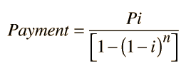

Calculation of Interest
The calculation of the interest on a loan is a useful application of algebra and exponents. For a monthly fractional interest rate i, principal P and number of payments n, the required payment may be calculated from

Note that in this formula, i is not an annual percentage rate, but a monthly fractional interest rate. For example, if the annual rate is 12%, the monthly fractional interest rate is i = 0.01 . For purposes of calculation, the active formula below may be used by entering the relevant data and then clicking on the quantity you wish to calculate.
Note: The interest rate calculation is not yet implemented. The equation for the interest is said to be "transcendental" in that it cannot be solved in closed form. An interative calculation is required.
|
Index |